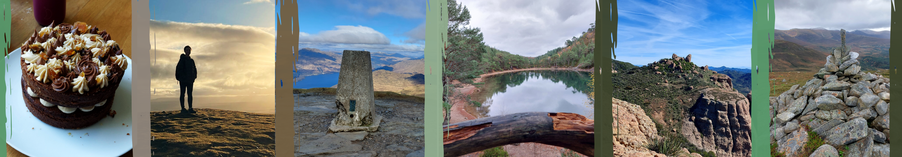
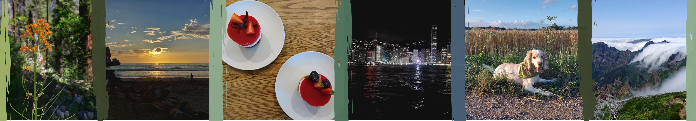
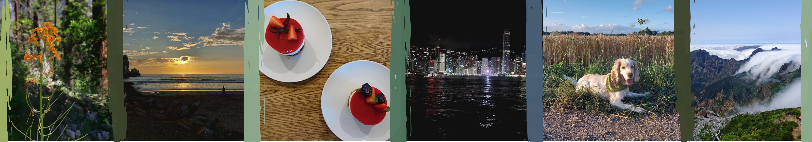
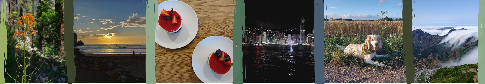
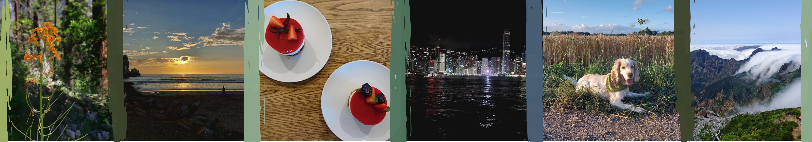

 



Hi, I am Emma, welcome to my little corner of the internet! I enjoy developing and applying computer science techniques, particularly AI, ML and data analysis, to problems in the physical sciences. My academic journey has centred on the intersection of computational physics and ML, with interests spanning from climate modelling to high energy physics, and growing curiosity about areas like cybersecurity and quantum computing.
I recently completed a BSc (Hons) in Computational Physics at the University of Edinburgh, including a year abroad at UCLA. I am now pursuing an MPhil in Data Intensive Science at the University of Cambridge, where I am continuing to develop my technical and analytical skills through advanced study in scientific computing, statistical analysis, and machine learning.
Across academic and industry settings, I have worked on a variety of projects, from modelling bacterial motion in fluid flows to analysing climate variability with machine learning techniques. What I enjoy most is addressing problems where scientific understanding directly shapes computational modelling. Applying physics to develop and refine models not only advances the code but also uncovers new insights that deepen our collective knowledge. For example, in a data compression project, I applied entropy concepts to enhance compression algorithms for a large language model dataset.
Outside of my studies, I enjoy playing piano, baking and exploring the outdoors through diving and hill walking.
Feel free to get in touch, the best way is through LinkedIn.